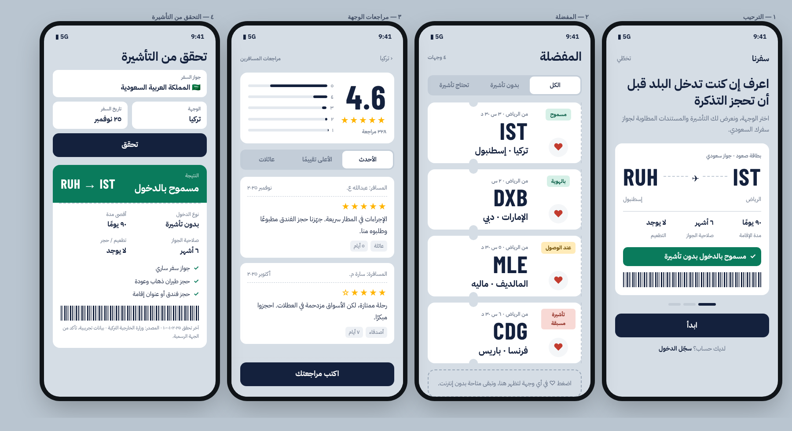
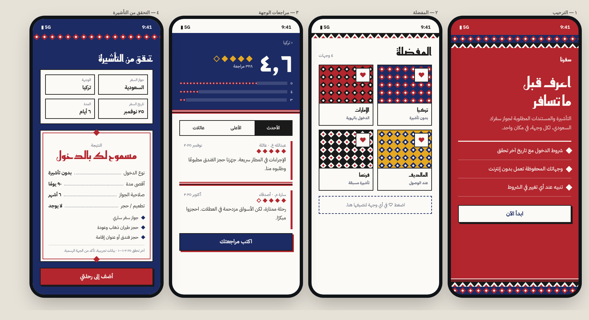
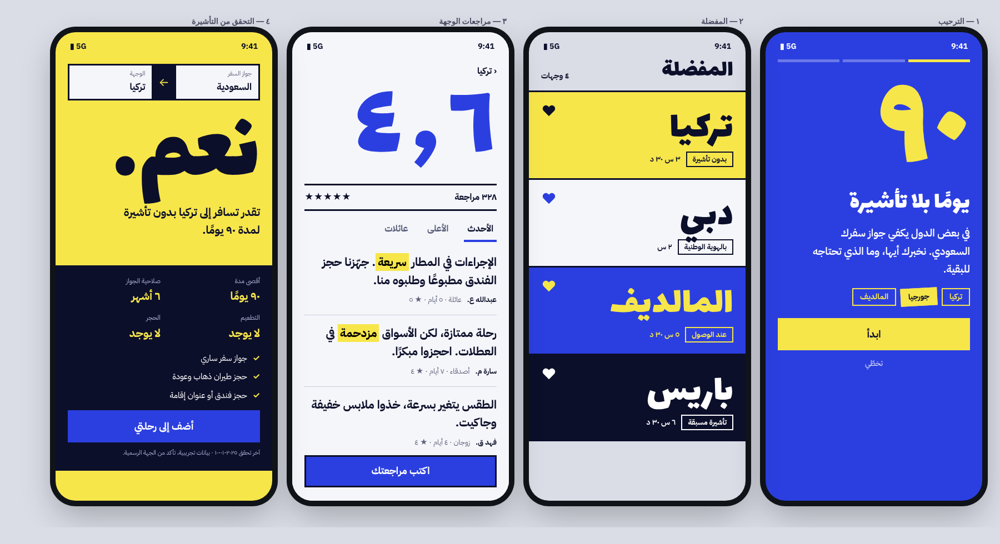

سفرنا — ثلاثة اتجاهات إضافية
كل اتجاه فيه أربع شاشات: الترحيب، المفضلة، مراجعات الوجهة، التحقق من التأشيرة. افتح الاتجاه لتجربة الأزرار والتبويبات.
د — بطاقة الصعود
كل وجهة تُعرض كبطاقة صعود بخط تمزيق وباركود، وحالة التأشيرة هي القسيمة. هادئ ومألوف لكل مسافر.
افتح الاتجاه د
هـ — سدو
أشرطة نسيج السدو الهندسية بالقرمزي والنيلي، وتقييم بالمعينات. هوية سعودية واضحة وفريدة.
افتح الاتجاه هـ
و — ملصق
أرقام عملاقة بالكوبالت والليموني: «٩٠» و«٤٫٦» و«نعم.». جريء وشبابي وسهل القراءة.
افتح الاتجاه و